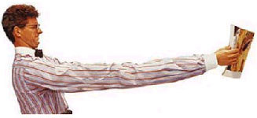

Consejos
Servicios para los sentidos
Con una tradición que lleva más de treinta años, Óptica del Notariado no deja de renovarse, incorporando tecnologías en el campo de la óptica y la audiología para mejorar la calidad de vida de sus usuarios.
En el rubro de los lentes de contacto la oferta se amplía considerablemente; los hay de uso semanal, quincenal, mensual o bianual. Con diversas prestaciones: monofocales, bifocales, multifocales, así como lentes de contacto para uso exclusivamente cosmético.
En servicios ópticos, se encuentran las principales marcas y se brindan todos los tratamientos para cristales. Se destaca la marca exclusiva “Confort Lens”, de cristales personalizados, antirreflejantes, oleofóbicos e hidrofóbicos, que hacen a un producto final liviano, ultradelgado y muy fácil de limpiar.
El departamento de audiología se enorgullece de contar con personal altamente calificado y tener a disposición del cliente todas las novedades en audífonos digitales de procedencia alemana. Las tecnologías de audífonos retroauriculares e intracanales resultan en productos invisibles, de máxima eficacia y confort. Solicitando día y hora por teléfono, cada usuario se asegura una consulta privada para acertar con el dispositivo ideal.Se aceptan todas las tarjetas, así como convenios con empresas y BPS en todos los productos.
La atención personal y la posibilidad de hacer las pruebas con un profesional, son un valor agregado fundamental para elegir de entre tantas opciones, cuál es la adecuada para el problema a solucionar. Es de resaltar que todos los productos cuentan además con un servicio de garantía de adaptación sin cargo.
Salud Visual y Salud Auditiva
Son los principales sentidos de nosotros los seres humanos, la vista y el oído, por eso le dedicamos nuestro máximo esfuerzo.
El respeto por tus ojos fue nuestra prioridad inicial y ahora desde hace tres años tus oídos.
Desde que “Ópticas del Notariado” y su “Primer Laboratorio Científico de Lentes de Contacto y Audífonos” comenzó con el proyecto de instalarse en Montevideo hace más de 30 años , tuvo siempre el concepto que lo más importante para nosotros era tu salud visual y auditiva.
El tiempo ha transcurrido y la vida ha cambiado a través de lo que nos ha brindado la tecnología: Internet, las redes sociales, los teléfonos celulares, la TV. digital, todos los electrodomésticos inteligentes, lo que no deja de estar incluida la tecnología en el campo de la óptica y de la audiología. Los que han servido tener los avances que hoy disfrutamos en los sectores de la óptica y audiología que hoy permiten corregir todas las necesidades de los usuarios.
Del departamento de óptica destacamos de la sección cristales, nuestra marca exclusiva “Confort-Lens”, cristales personalizados, antireflejantes, oleofóbicos, hidrofóbicos, ultradelgados, livianos, fáciles de limpiar que ayudan a una visión perfecta con óptimo rendimiento.
Sácale lo máximo a cada instante y disfruta de una visión perfecta. Alcanzar una edad de madurez no impide obtener una vida confortable, para ello los cristales progresivos que se adaptan a todas las necesidades visuales de cada individuo, en total garantía de adaptación, es lo que Ópticas del Notariado da un paso más para tus problemas visuales.
Nuestros anteojos que garantizan la resistencia y calidad, con diseños actuales de acetato, metal y titanio que ayudarán desde los más pequeñitos a los adultos mayores a sentirse más cómodos.
Innovar, hacer que el esfuerzo de brindar un producto que identifique la forma de trabajar de Ópticas del Notariado y su “Primer Laboratorio Científico de Lentes de Contacto y Audífonos”, fue que pensamos en colaborar a mejorar tu estilo de vida y no te encuentres ajeno a lo que rodea tu vida de relación.
En Lentes de Contacto, ofrecemos todas las marcas internacionales en sus diferentes presentaciones de uso diario, semanal, quincenal,mensual o bianuales, incoloras, cosméticas, monofocales, bifocales o multifocales con la mejor atención, la mayor experiencia, garantía de adaptación y pruebas sin cargo.
Nuestro “Departamento de Audiología” equipado con los últimos adelantos tecnológicos y con personal altamente calificado brinda la mejor solución con audífonos digitales, de procedencia alemana, con todos los modelos más desarrollados retroauriculares e intracanales son las nuevas soluciones auditivas invisibles de máxima eficiencia y confort.
Por lo tanto, aquellas personas con problemas auditivas leves o severas pueden solicitar día y hora para su atención personalizada.
Nuestro departamento financiero para facilitar tus compras acepta todas las tarjetas, órdenes de B.P.S para trabajadores, jubilados, pensionistas, convenios con instituciones. Todo con total garantía de “Ópticas del Notariado”.
“Ópticas del Notariado”, una vez más, marca la diferencia.
Presbicia
La Presbicia es el defecto de la visión más común, que tarde o temprano afecta a todas las persona con la edad.
No se trata de una enfermedad, sino de un proceso de deterioro funcional que comienza en el niño, para llegar a constituir un problema real más adelante, cuando se instaura de forma apreciable, lo que suele acontecer hacia los 40 o 50 años.
Si nota que no ve bien el periódico, las letras aparecen borrosas y más pequeñas de lo habitual y se tiene que alejar el texto, alargando los brazos, ese el primer síntoma de que usted es présbita.
Al principio la lectura se hace posible, pero es un síntoma de la presbicia que de forma inevitable aparece ya en la edad media de su vida.
Un responsable
El cristalino es una lente elástica que está dentro del ojo, situado detrás del iris, mide de 8 a 10 mm de diámetro, 4 mm de espesor y pesa 200 miligramos y está suspendida en el globo ocular por pequeños ligamentos unidos a los músculos ciliares.
Esta lentilla biológica está capacitada para modificar su curvatura según se enfoque al infinito o a un punto próximo, es decir, que el cristalino modifica rápidamente su curvatura para ver nítido a diferentes distancias. No obstante, a los 40 o 50 años el cristalino pierde su condición de adaptarse perfectamente a las distancias próximas.
Esta falta de acomodación del cristalino, produce el fenómeno de la presbicia. Para corregir y mejorar la imagen limpia sobre la retina, se recurre ala adición óptica, usando lentes convencionales o de contacto apropiadas a cada persona y que deberá actualizar, aproximadamente, cada dos años.
Afortunadamente la solución a la presbicia, está resuelta por los profesionales de la visión como Ópticas del Notariado, que le recomendarán la mejor para su caso.
Tenga en cuenta que le compensaremos eficazmente esta pérdida a distancias cortas. Generalmente, la presbicia está asociada a la miopía, hipermetropía, o al astigmatismo que son otros defectos que suelen superponerse y que hay que corregir a la vez que la presbicia.
Es alentador que hoy en día contemos con las lentes multifocales o progresivas, que permiten ver bien a diferentes distancias.
Las gafas premontadas se están generalizando y no las recomendamos: su adquisición y uso sin control del profesional puedes ser nefasto para la visión, ya que no corrigen el posible astigmatismo, normalmente carecen de la distancia interpupilar correcta y no solucionan otros posibles problemas asociados a la presbicia (vista cansada).
CADA PERSONA, NECESITA SIEMPRE UNA CORRECCIÓN DIFERENTE Y PERSONALIZADA. Concurra a cualquiera de nuestras 4 sucursales y consulte con un técnico quién le hará un test de lectura.
Nuestros hijos
Los ojos de nuestros hijos
¿Recuerda usted cuando era niño y le hacían un control de la vista con el gráfico que tenía una letra E grande?
Este gráfico se sigue utilizando en los controloes de la vista realizados en las escuelas a pesar de que, en general, sólo detecta entre un 20% y un 30% de los problemas de la vista que tienen los niños. Por ejemplo, este control puede detectar si el niño puede ver la pizarra pero no si puede leer un libro.
Estos problemas no detectados de la vista pueden inducir dificultades en e aprendizaje e impedir que el niño disfrute de la lectura. El 80% del aprendizaje que realiza un niño durante los primeros 12 años depende de la visión y, por lo tanto, los problemas visuales de un niño pueden originar retrasos en el aprendizaje.
En Ópticas del Notariado, le recomendamos que acuda con su hijo a un profesional especializado en visión infantil como parte de los exámenes de rutina que realiza antes que el niño comience el año escolar.
DE CADA 4 FRACASOS ESCOLARES, 3 ESTÁN RELACIONADOS CON LA VISIÓN. MÁS DEL 80% DE LO QUE EL NIÑO APRENDE ENTRA POR LOS OJOS
DE CADA 4 FRACASOS ESCOLARES, 3 ESTÁN RELACIONADOS CON LA VISIÓN. MÁS DEL 80% DE LO QUE EL NIÑO APRENDE ENTRA POR LOS OJOS
Los niños pequeños que tienen problemas de la vista no saben generalmente que el mundo es distinto de como ellos lo ven.
El problema que nunca hayan visto correctamente y, por tanto, no pueden saber que su visión no es normal.
Una lección sobre el cuidado de la vista
Los problemas visuales pueden tratarse con más éxito durante el crecimiento y desarrollo del sistema visual del niño. A la edad en que los niños inician la escolarización, el sistema visual no está totalmente desarrollado y, necesita una ayuda específica. Si usted posterga el examen de la vista puede causarle problemas visuales y de rendimiento escolar.
Para detectar problemas en la vista de su hijo es muy importante que un profesional cualificado realice un examen completo y oportuno. Los padres y los maestros deben estar atentos a ciertos síntomas indicadores de posibles problemas de la vista:
- Entrecerrar, cerrar o cubrirse un ojo.
- Parpadear o frotarse excesivamente los ojos.
- No le gusta o evita tareas que requieren mirar de cerca; períodos breves de atención, distracción frecuente.
- Colocar la cabeza cerca del libro durante la lectura, o confundirse de línea.
- Quejarse de dolor de cabeza, náuseas y mareo.
- Torpeza excesiva.
- Girar la cabeza o inclinarla hacia un lado.
Si nota alguno de estos síntomas lleve a su hijo a un profesional de la visión para que le realice un control.